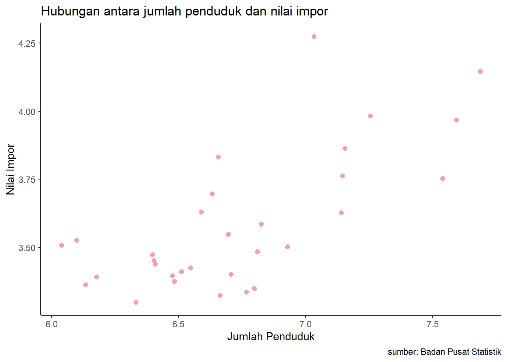
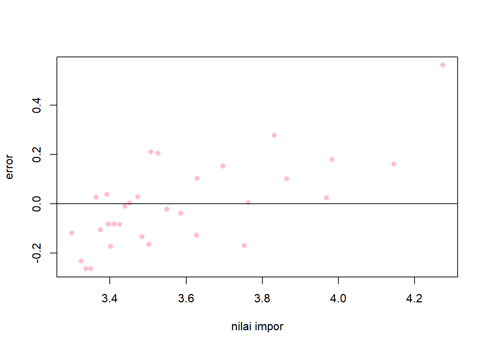
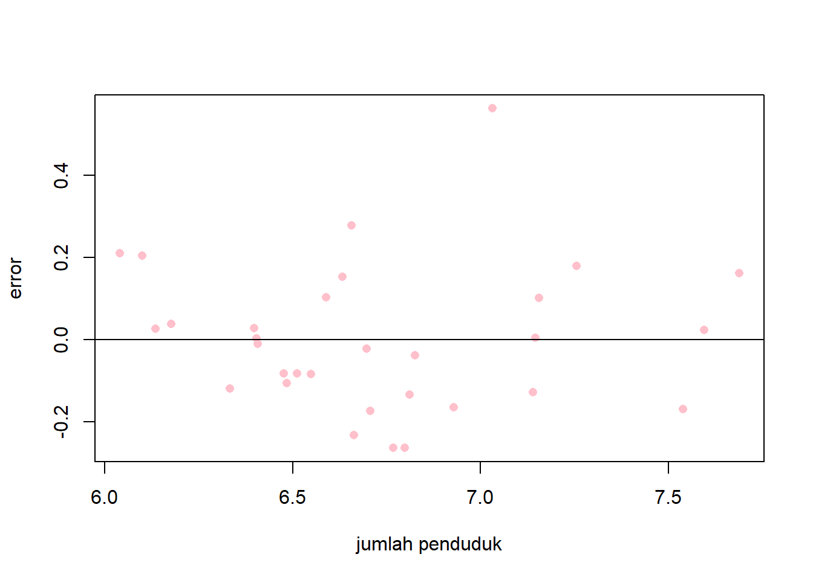

library(tidyverse)
library(readxl)
library(writexl)
library(dplyr)Pengaruh Jumlah Penduduk terhadap Impor di Indonesia
Metode Penelitian Politeknik APP Jakarta

1 Pendahuluan
1.1 Latar belakang
Pertumbuhan penduduk yang tinggi pada suatu negara pastinya diiringi dengan permintaan yang meningkat akan barang dan jasa. Indonesia sebagai negara yang menduduki peringkat keempat sebagai negara dengan populasi terbesar di Indonesia membuatnya harus memenuhi pasokan akan barang dan jasa yang dibutuhkan oleh penduduknya. Tingginya permintaan ini tidak selalu dapat dipenuhi oleh produksi yang dilakukan di dalam negeri, sehingga harus dilakukan kegiatan impor. Impor yang dilakukan oleh suatu negara ini memberikan manfaat pada perekonomian, seperti memperluas pilihan konsumen, meningkatkan efisiensi produksi, dan menurunkan harga barang. Di lain sisi, impor juga memiliki dampak buruk, seperti defisit neraca perdagangan, ketergantungan terhadap negara lain, dan penurunan daya saing produk lokal.
Oleh sebab itu, mengetahui faktor-faktor yang mempengaruhi impor di Indonesia sangatlah penting, salah satunya adalah populasi. Beberapa mekanisme dari populasi yang bias mempengaruhi impor, seperti skala pasar, preferensi konsumen, struktur pendapatan, dan tingkat urbanisasi. Penilitian ini diharapkan dapat menjadi kontribusi bagi pengembangan ilmu ekonomi, khususnya perdagangan internasional.
1.2 Ruang lingkup
penelitian ini mengkaji pengaruh jumlah penduduk terhadap nilai impor di Indonesia pada tahun 2020. Penelitian ini menggunakan data resmi dari Badan Pusat Statistik (BPS) mengenai jumlah penduduk dan nilai impor pada 32 provinsi di Indonesia. Penelitian ini menggunakan metode Ordinary Least Square (OLS) atau regresi univariat.
1.3 Rumusan masalah
Apakah jumlah penduduk mempengaruhi impor di Indonesia ?
Bagaimana hubungan antara jumlah penduduk dan impor di Indonesia?
1.4 Tujuan dan manfaat penelitian
Tujuan penelitian
Tujuan umum penelitian ini adalah untuk mengetahui pengaruh jumlah penduduk terhadap nilai impor di Indonesia pada tahun 2020.
Tujuan teoretis penelitian ini adalah untuk menguji hipotesis tentang hubungan antara jumlah penduduk dan nilai impor di Indonesia, serta untuk memberikan kontribusi pada pengembangan ilmu ekonomi dan perdagangan internasional.
Tujuan praktis penelitian ini adalah untuk memberikan informasi dan rekomendasi kepada pemerintah dan pelaku usaha tentang faktor-faktor yang mempengaruhi nilai impor di Indonesia, serta untuk meningkatkan kesejahteraan masyarakat melalui kebijakan perdagangan yang tepat.
Manfaat penelitian
Manfaat teoretis penelitian ini adalah untuk memperkaya pengetahuan dan pemahaman tentang fenomena ekonomi dan perdagangan di Indonesia, khususnya mengenai pengaruh jumlah penduduk terhadap nilai impor.
Manfaat praktis penelitian ini adalah untuk memberikan masukan dan saran kepada pemerintah dan pelaku usaha tentang strategi dan kebijakan perdagangan yang dapat meningkatkan daya saing dan kinerja impor Indonesia, serta untuk mendorong pertumbuhan ekonomi dan pembangunan nasional.
1.5 Package
Packages yang digunakan antara lain sebagai berikut:
2 Studi pustaka
Populasi Indonesia
Populasi Indonesia adalah jumlah penduduk yang tinggal di wilayah negara Indonesia. Pada tahun 2024 sendiri populasi Indonesia diperkirakan mencapai 271,9 juta jiwa dan menjadikannya sebagai negara dengan populasi terbesar keempat di dunia. Populasi Indonesia sendiri sangatlah beragam, mulai dari keberagaman suku, agama, bahasa, dan budaya. Seiring dengan perkembangan sosial, ekonomi, politik, dan lingkungan, populasi Indonesia juga mengalami perubahan. Ada beberapa aspek penting yang terkait dengan populasi Indonesia, seperti densitas dan distribusi penduduk, struktur penduduk, pertumbuhan penduduk, dan indikator demografi.
Impor Indonesia
Negara asal utama impor Indonesia adalah Tiongkok dengan nilai USD 39,35 miliar (30,91 persen), diikuti oleh Jepang USD 10,63 miliar (8,35 persen), dan Singapura USD 8,12 miliar (6,38 persen). Dilihat dari golongan penggunaan barang ekonomi, impor Indonesia masih didominasi oleh bahan baku/penolong sebesar USD 103,21 miliar (72,90 persen), diikuti oleh barang modal USD 23,70 miliar (16,74 persen) dan barang konsumsi USD 14,66 miliar (10,35 persen).
Menurut Badan Pusat Statistik (BPS), impor Indonesia pada tahun 2020 mencapai USD 141,57 miliar, yang terdiri dari impor migas USD 14,26 miliar dan impor nonmigas USD 127,31 miliar. Jika dibandingkan dengan tahun 2019, nilai impor turun 17,34 persen, disebabkan oleh penurunan impor migas 34,86 persen dan impor nonmigas 14,78 persen.
Impor Indonesia dipengaruhi oleh berbagai faktor, seperti kondisi ekonomi global dan domestik, permintaan pasar, kurs mata uang, harga komoditas, dan kebijakan pemerintah. Pada tahun 2020, impor Indonesia mengalami dampak negatif dari pandemi COVID-19, yang menurunkan aktivitas perdagangan, produksi, dan konsumsi di dalam dan luar negeri.
3 Metode penelitian
3.1 Data
| Provinsi | Jumlah penduduk(juwa) | Nilai Impor(juta USD) | x | y |
|---|---|---|---|---|
| DKI.Jakarta | 10.770.496 | 18.787.76 | 7.032235704 | 4.273875004 |
| Jawa Barat | 48.795.636 | 13.992,77 | 7,688380983 | 4,145903696 |
| Jawa Timur | 39.315.027 | 9.299,57 | 7,594558578 | 3,968462868 |
| Jawa Tengah | 34.622.815 | 5.661,70 | 7,539362375 | 3,752946853 |
| Banten | 17.972.962 | 9.621,61 | 7,254619656 | 3,983247749 |
| Sumatera Utara | 14.284.128 | 7.304,11 | 7,154853733 | 3,863567305 |
| Sulawesi Selatan | 13.992.423 | 5.796,30 | 7,145892926 | 3,763150855 |
| Sumatera Selatan | 13.803.484 | 4.241,46 | 7,139988716 | 3,627515376 |
| Kalimantan Selatan | 6.678.750 | 3.852,43 | 6,824695187 | 3,585734756 |
| Sulawesi Tengah | 4.968.622 | 3.537,99 | 6,696235958 | 3,548756601 |
| Papua | 4.601.123 | 2.110,81 | 6,662863843 | |
| Kalimantan Timur | 4.524.664 | 6.791,29 | 6,655586334 | 3,831952276 |
| Bali | 4.288.295 | 4.971,65 | 6,632284654 | 3,696500547 |
| Sulawesi Utara | 3.876.939 | 4.259,67 | 6,588488968 | 3,629375955 |
| Kalimantan Utara | 3.245.197 | 2.578,60 | 6,511241066 | 3,411383978 |
| Maluku | 3.044.702 | 2.372,34 | 6,483544793 | 3,375176932 |
| Nusa Tenggara Tim | 2.555.000 | 2.749,63 | 6,407390904 | 3,439274258 |
| Jambi | 3.531.108 | 2.660,71 | 6,547911001 | 3,424997542 |
| Bengkulu | 2.992.000 | 2.489,86 | 6,475961589 | 3,396174928 |
| Gorontalo | 1.360.843 | 2.307,81 | 6,133808024 | 3,363200051 |
| Maluku Utara | 1.256.302 | 3.356,74 | 6,099094051 | 3,525917704 |
| Sumatera Barat | 5.845.302 | 2.170,30 | 6,766806954 | 3,33651977 |
| Lampung | 8.481.736 | 3.181,46 | 6,928484751 | 3,502626467 |
| Nusa Tenggara Bar | 6.285.160 | 2.235,43 | 6,798316338 | 3,349361075 |
| Kalimantan Tengah | 2.496.295 | 2.973,16 | 6,397295907 | 3,473218281 |
| Sulawesi Tenggara | 2.527.801 | 2.829,21 | 6,402742881 | 3,451665184 |
| Aceh | 5.090.147 | 2.520,92 | 6,706730325 | 3,401559064 |
| Papua Barat | 1.095.057 | 3.217,90 | 6,039436726 | 3,507572544 |
| Riau | 6.464.850 | 3.049,30 | 6,810558453 | 3,484200154 |
| Bangka Belitung | 1.503.921 | 2.464,74 | 6,177225024 | 3,391771113 |
| Kepulauan Riau | 2.150.329 | 1.994,01 | 6,332504912 | 3,299727332 |
Data yang digunakan dalam penelitian ini adalah data resmi dari Badan Pusat Statistik (BPS) Indonesia mengenai jumlah penduduk dan nilai impor per provinsi di Indonesia pada tahun 2020. Kemudian peneliti melakukan log pada data agar mendapatkan hubungan yang linier, dan menghasilkan data x dari data jumlah penduduk dan y dari data nilai impor.
#import dataset
library(readxl)
dev<-read_excel('dev.xlsx')
head(dev)# A tibble: 6 × 5
provinsi `jumlah penduduk(Jiwa) (X)` nilai impor(juta USD)…¹ x y
<chr> <dbl> <dbl> <dbl> <dbl>
1 DKI Jakarta 10770496 18788. 7.03 4.27
2 Jawa Barat 48795636 13993. 7.69 4.15
3 Jawa Timur 39315027 9300. 7.59 3.97
4 Jawa Tengah 34622815 5662. 7.54 3.75
5 Banten 17972962 9622. 7.25 3.98
6 Sumatera Utara 14284128 7304. 7.15 3.86
# ℹ abbreviated name: ¹`nilai impor(juta USD) (Y)`library("ggplot2")
library("readxl")
library("dplyr")
ggplot(data=dev,aes(x=x,y=y)) +
geom_point(color="#EEA2AD",size=2) +
labs(title="Hubungan antara jumlah penduduk dan nilai impor",
x="Jumlah Penduduk",
y="Nilai Impor",
caption = "sumber: Badan Pusat Statistik") +
theme_classic()
3.2 Metode analisis
Metode yang digunakan dalam penelitian ini adalah regresi univariat, yaitu metode analisis yang menguji pengaruh satu variabel independen terhadap satu variabel dependen. Menggunakan teknik kuantitatif deskriptif. Spesifiksi yang digunakan adalah :
\[ y_{t}=\beta_0 + \beta_1 x_t+\mu_t \] di mana \(y_t\) adalah Jumlah Penduduk dan \(x_t\) adalah Nilai Impor.
4 Pembahasan
4.1 Pembahasan masalah
Data yang telah dikumpulkan kemudian dilakukan regresi dan menghasilkan:
| Coefficients | Estimate | Pr > t |
|---|---|---|
| Intercept | 0.77820 | 0.144 |
| x | 0.41704 | 7.81e-06 |
Kemudian hasil dimasukkan kedalam rumus persamaan :
\[ y_{t}=\ 0.77820 + \ 0.41704 x +\mu_t \]
Koefisien regresi untuk x sebesar 0.41704. Artinya, setiap kenaikan satu satuan x akan meningkatkan y sebesar 0.41704 satuan. rata-rata. Nilai p-value untuk koefisien x sangat kecil (7.81e-06), yang berarti terdapat hubungan yang signifikan antara variabel x dan y, yang artinya ada hubungan yang signifikan antara jumlah penduduk dan nilai impor.
4.2 Analisis masalah
Hasil regresinya adalah :
library(readxl)
dev<-read_excel("dev.xlsx")
reg<-lm(y~x,data=dev)
summary(reg)
Call:
lm(formula = y ~ x, data = dev)
Residuals:
Min 1Q Median 3Q Max
-0.26397 -0.12383 -0.01103 0.10255 0.56299
Coefficients:
Estimate Std. Error t value Pr(>|t|)
(Intercept) 0.77820 0.51845 1.501 0.144
x 0.41704 0.07688 5.424 7.81e-06 ***
---
Signif. codes: 0 '***' 0.001 '**' 0.01 '*' 0.05 '.' 0.1 ' ' 1
Residual standard error: 0.1809 on 29 degrees of freedom
Multiple R-squared: 0.5036, Adjusted R-squared: 0.4865
F-statistic: 29.42 on 1 and 29 DF, p-value: 7.808e-06library(readxl)
dev$m<-resid(reg)
plot(dev$y,dev$m,xlab="nilai impor",ylab="error",col='pink',pch=16)
abline(h=0)
library(readxl)
dev$m<-resid(reg)
plot(dev$x,dev$m,xlab="jumlah penduduk",ylab="error",col='pink',pch=16)
abline(h=0)
Hasil regresi menunjukkan model memiliki nilai R-squared sebesar 0.5036, yang berarti bahwa 50.36% variasi y dapat dijelaskan oleh x. Sedangkan nilai F-statistic sebesar 29.42, dengan p-value yang sangat kecil (7.808e-06), yang berarti model signifikan secara keseluruhan.
5 Kesimpulan
Terdapat hubungan yang signifikan terhadap pengaruh jumlah penduduk terhadap nilai impor, hal ini dapat terjadi karena jumlah penduduk yang besar dapat meningkatkan permintaan akan barang dan jasa, baik yang diproduksi dalam negeri maupun luar negeri. Jika permintaan akan barang impor lebih besar daripada penawaran dalam negeri, maka nilai impor akan meningkat.
Selain itu, jumlah penduduk dapat mempengaruhi pendapatan per kapita, yang merupakan salah satu indikator kesejahteraan ekonomi. Jika pendapatan per kapita tinggi, maka penduduk cenderung memiliki daya beli yang tinggi dan preferensi yang beragam, yang dapat meningkatkan permintaan akan barang impor yang berkualitas dan bervariasi.
6 Referensi
Suryanto, E., & SASANA, H. (2017). ANALISIS PENGARUH PDB, POPULASI, KURS DAN INFLASI TERHADAP IMPOR DI INDONESIA (Doctoral dissertation, Fakultas Ekonomika dan Bisnis).
Indraswari, R. R., & Yuhan, R. J. (2017). JURNAL KEPENDUDUKAN INDONESIA. Jurnal Kependudukan Indonesia| Vol, 12(1), 1-12.
Sari, R. K. (2014). Analisis impor beras di Indonesia. Economics Development Analysis Journal, 3(2).
Atmadji, E. (2004). Analisis Impor Indonesia. Economic Journal of Emerging Markets, 9(1).
Yuliadi, I. (2008). Analisis Impor Indonesia: Pendekatan Persamaan Simultan. Jurnal Ekonomi & Studi Pembangunan, 9(1), 89-104.